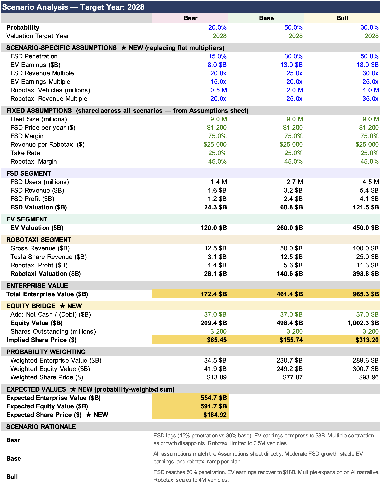
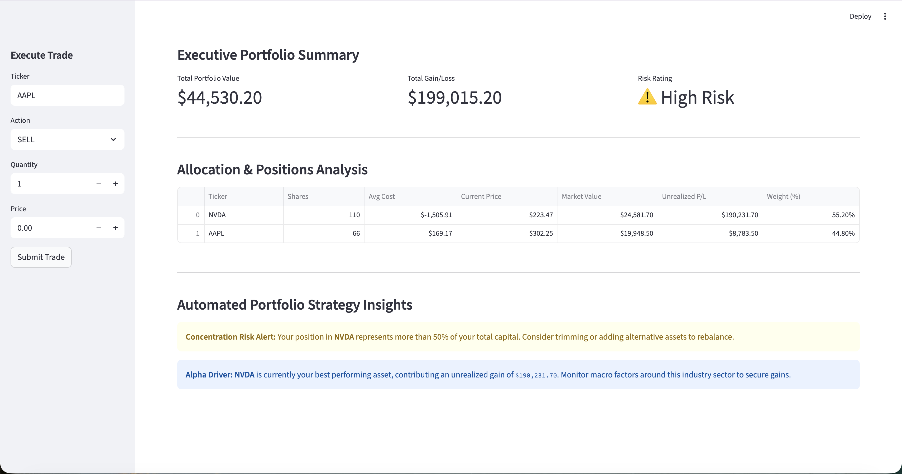

EQUITY RESEARCH • FINANCIAL ANALYTICS • DATA SCIENCE
Active Stock Investor
Institutional-Style Equity Research, Financial Analytics,
Quantitative Investing & Data Science Projects
Featured Projects

EQUITY RESEARCH
Tesla: The Autonomy Wager
Institutional-style equity research project analyzing Tesla’s valuation framework, industry positioning, unit economics, financial performance and long-term autonomous mobility thesis.
Research Essays
Financial Model
Integrated Excel valuation and scenario modeling framework including:
- Revenue Forecasting & Operating Margin Projections
- Scenario Analysis & SOTP Valuation
- DCF Sensitivity Analysis
Interactive Dashboard

DATA SCIENCE • FINANCIAL ANALYTICS • DATA ENGINEERING
Portfolio Analytics & Performance Tracking Platform
Full-stack portfolio analytics platform built using Python, Streamlit, PostgreSQL, SQLAlchemy and market data APIs. The system replicates institutional portfolio monitoring workflows by integrating trade management, performance attribution, benchmark tracking and risk analytics into a single interactive dashboard.
Project Objective
Developed to demonstrate how investment professionals monitor portfolio performance, manage positions, evaluate risk-adjusted returns and maintain portfolio databases in a production-style analytical environment.
Technical Architecture
- Frontend Application: Streamlit
- Backend Analytics Engine: Python
- Database Infrastructure: PostgreSQL (Neon) + SQLAlchemy
- Market Data Integration: Yahoo Finance API
- Data Processing & Analytics: pandas & NumPy
- Visualization & Reporting: matplotlib
- Cloud Deployment: Streamlit Community Cloud
Key Features
- Portfolio Trade Execution & Transaction Management
- Live Holdings, Allocation & Performance Monitoring
- Benchmark Comparison & Relative Performance Analysis
- Volatility, Sharpe Ratio & Drawdown Analytics
- Portfolio Equity Curve & Historical Performance Tracking
- Persistent PostgreSQL Portfolio Database
Project Highlights
The project combines financial analytics, database engineering and interactive dashboard development into a deployable investment monitoring system. It demonstrates practical application of data science, software engineering and quantitative finance concepts commonly used in asset management and investment research roles.
Project Links
```About Me
Economics & Data Science undergraduate building finance-focused analytical systems, quantitative research frameworks and investment intelligence dashboards.
- Equity Research & Valuation Modeling
- Quantitative Investing & Portfolio Analytics
- Financial Data Engineering & Visualization
- Python, SQL & Interactive Dashboard Development
Contact
Email: brandon2017ma@gmail.com
GitHub: github.com/brxdn23ma